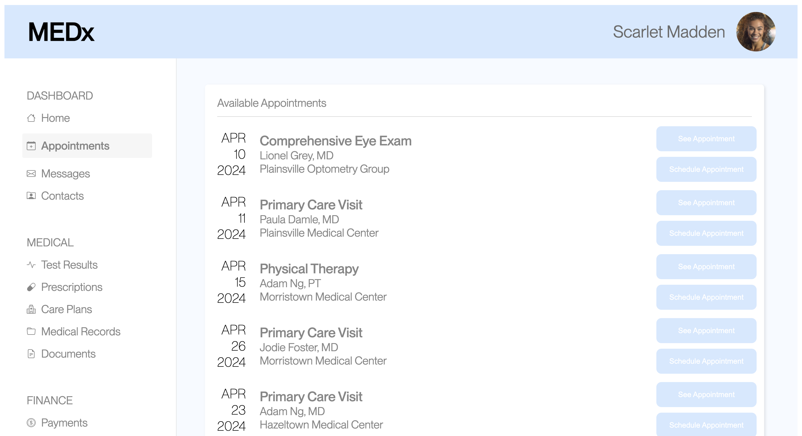
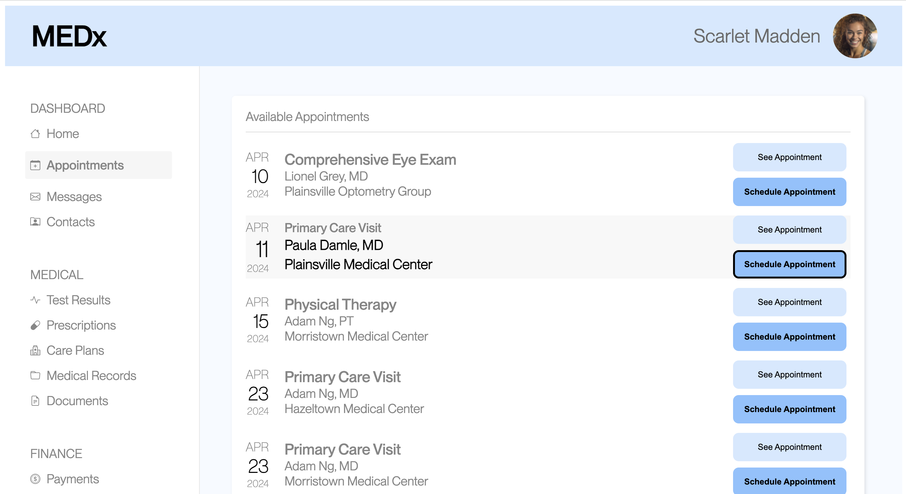
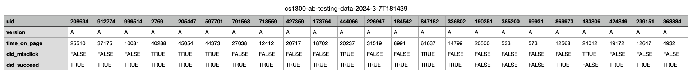
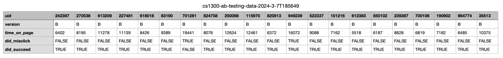
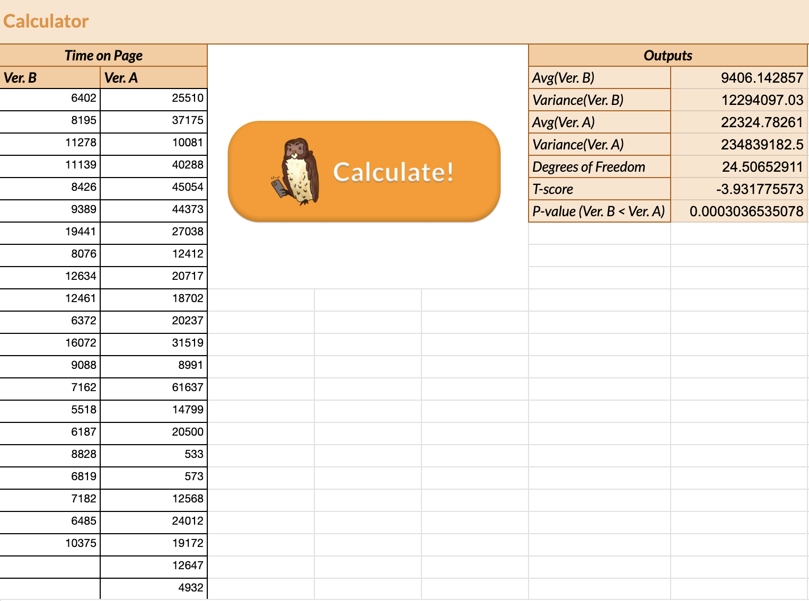
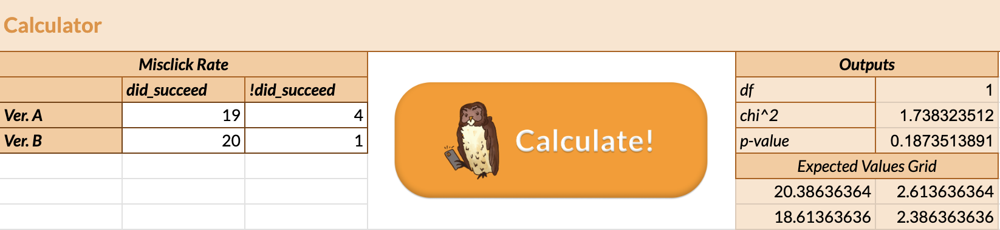

Part 1: Data Collection
Original Version A Interface:

Revised Version B Interface:
A few changes have been made:
1. Adjusted the font sizes and colors of the date information to emphasize the specific date over the month and year.
2. Modified the font weight and color of the text on buttons to enhance visibility.
3. Changed the color of the "Schedule Appointment" button to make it more distinct from others.
4. Added hovering effects on the information row and buttons to clearly indicate the mouse's position.

Experiment:
Participants were asked to schedule an appointment with Adam Ng, MD at Morristown Medical Center on April 23, 2024.
Throughout the task, data was collected on various metrics, including time spent on the page, time until the first click, distance of mouse movement, number of clicks, occurrence of misclicks, and task success.
Part 2: Analysis
Creating Hypotheses:
Three data types have been selected to formulate hypotheses. These include:
Misclick rate: How often users click the wrong thing before they hit the right button.
- Null Hypothesis: Misclick rates are the same for both versions.
The prediction is version B will have fewer wrong clicks because its design helps focus better on the right spots.
- Alternative Hypothesis: Version B has fewer misclicks than version A.
The reasoning is the new design makes it clearer where to click, thanks to better layout of dates, buttons, and mouseover hints.
Time on page: How long each group spends on the site.
Success rate: How many get it right the first time.
Raw Data of Selected Data Types:


Run Statistical Tests on the Data:
Test on Misclick Rate:
Type of test: chi-squared test, because it's comparing frequency and the data is categorical.
Test result: df = 1, χ^2 = 2.024, p-value = 0.155.
Interpretion & conclusion:
The difference in misclick rates between versions A and B is not statistically significant, with a p-value of 0.155, which exceeds the 0.05 significance threshold. The chi-squared statistic of 2.024 with 1 degree of freedom indicates a discrepancy between observed and expected misclick frequencies, but it's not sufficient to reject the null hypothesis. Therefore, we conclude there's no significant difference in misclick rates between the versions.
Test on Time on Page:
Type of test: one-tailed t-test, because we have directional hypothesis on this continuous data.
Test result: df = 24.506, t-score = 3.932, p-value = 0.0003.

Interpretion & conclusion: The difference in the time spent on page between versions A and B is statistically significant, with a p-value of approximately 0.0003, well below the 0.05 threshold. The negative t-score of -3.932, with approximately 24.51 degrees of freedom, indicates that the average time spent on version B (about 9406 milliseconds) is significantly less than on version A (about 22325 milliseconds). Therefore, we reject the null hypothesis and conclude that users spend significantly less time on version B compared to version A.
Test on Success Rate:
Type of test: chi-squared test, because it's comparing frequency and the data is categorical.
Test result: df = 1, χ^2 = 1.738, p-value = 0.187.

Interpretion & conclusion:
The difference in success rates between versions A and B is not statistically significant, with a p-value of 0.187, which exceeds the 0.05 significance threshold. The chi-squared statistic of 1.738 with 1 degree of freedom suggests a minor discrepancy between the observed and expected success frequencies, but this discrepancy is not enough to reject the null hypothesis. Therefore, we conclude that there is no significant difference in the success rates between the two versions.
Summary Statistics:
In this A/B testing exercise, 23 data points were collected for version A and 21 for version B.
From the tests conducted, we successfully rejected one of the three null hypotheses, indicating that the redesign indeed enhances users' efficiency in executing tasks.
While the null hypotheses for the other two tests were not rejected, this is largely attributed to their low p-values. Since these data types are categorical, we cannot calculate their mean, median, and mode, but the percentage differences are noticeable.
The misclick rates for versions A and B are 26.09% and 9.52%, respectively. The success rates for versions A and B are 82.61% and 95.24%, respectively, both suggesting benefits from the redesign.
The low p-values are primarily due to the small sample size. Increasing the sample size should help us draw more meaningful conclusions.
Part 3: Conclusions & Takeaways
Through this A/B testing exercise, I gained valuable hands-on experience in analyzing quantitative data scientifically.
This approach allows us to draw more precise and convincing conclusions.
- Choosing the right metrics for data collection and analysis is crucial; otherwise, the entire test may lack relevance.
- Drawing meaningful conclusions from a small sample size is challenging.
- Analyzing user behavior is a highly scientific and accurate process.